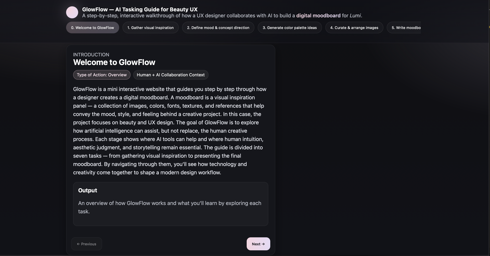
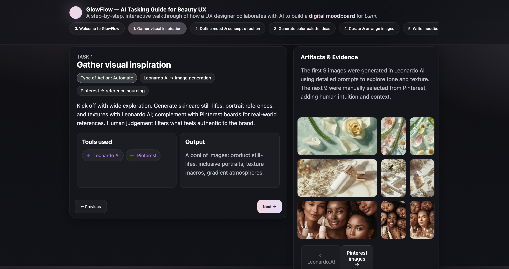
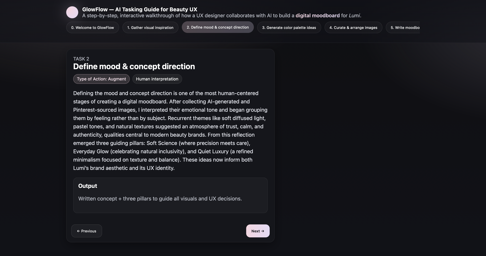
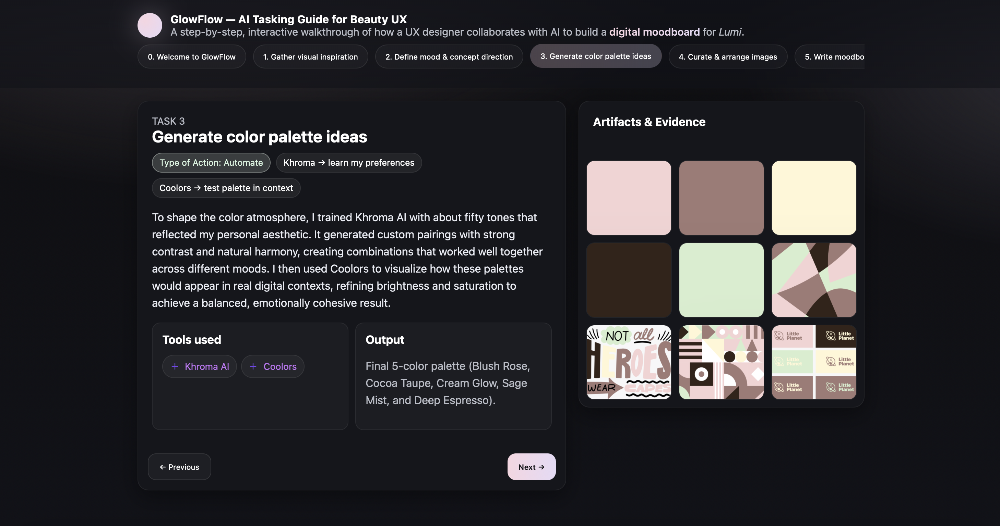
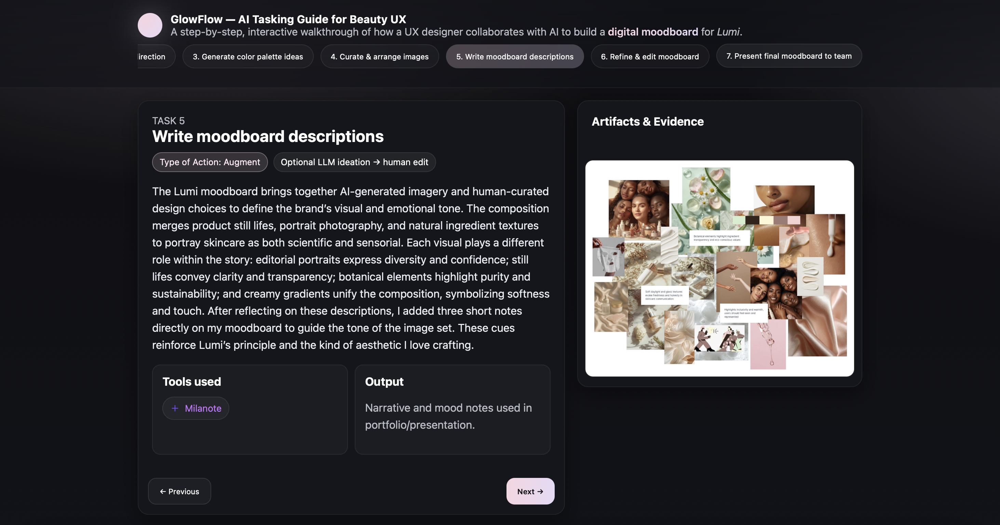

Introduction - Landing Page

Task 1

Task 2

Task 3

Task 4

Task 5
An interactive website that guides designers through creating visual moodboards. GlowFlow explores how artificial intelligence can act as a creative collaborator.
View Live ProjectA walkthrough of the GlowFlow interface and interactive process.
GlowFlow is an interactive AI tasking guide / website that walks designers through the process of creating a moodboard using both human creativity and AI assistance. The site explores the boundaries between automation and authorship, showing how designers can collaborate with AI tools to accelerate visual ideation while preserving personal creative intent.
GlowFlow was built as part of my Designing with AI course at Parsons. It’s structured like a step-by-step creative guide; each page introduces a phase of the design process — from inspiration gathering to curation and refinement. Instead of replacing designers, GlowFlow emphasizes how AI can act as a collaborator, suggesting ideas, textures, and palettes while still leaving space for human intuition and emotional direction.
The visual style of GlowFlow is minimalist but dynamic, using soft gradients, translucent panels, and interactive buttons to reflect a sense of flow and creativity. Smooth transitions, consistent typography, and glowing highlights evoke a meditative rhythm aligned with the name “GlowFlow.” The color palette uses muted lilacs and pinks inspired by light diffusion.
Introduction - Landing Page
Task 1
Task 2
Task 3
Task 4
Task 5
Task 6
Task 7